is a function of period
is a function of period  ,
then it can be proved that can be expressed as
the following series
,
then it can be proved that can be expressed as
the following series
|
Abstract
These notes review the basic theory of Fourier analysis. The emphasis is on the content that are necessary for one to correctly interpret and use the output of FFT computer libraries (e.g. FFTW).
These notes were written when I was developing numerical codes that need to use FFT libraries. Like all students majoring in physics, I learned the Fourier series and Fourier transform in calculus courses when I was a undergraduate student. To apply this important mathematical method in practice, one additional necessary step is to know the Discrete Fourier Transform (DFT) and its fast numerical implementation, i.e., Fast Fourier Transform algorithm (FFT). There are many online material discussing these topics and I read some of them. But finally I found that I need to derive all the relevant formulas step by step by myself to convince myself that I fully understand the DFT and its many variations, such as discrete sine transform and cosine transform, and I am correctly using the output of FFT libraries.
Although the Fast Fourier Transform algorithm (FFT) is among the top ten algorithms that have changed the world, we do not need to know the details about this algorithm itself, which is simply an efficient way of computing the summation involved in the DFT. What we need to know is how the DFT is defined (so that we know how it can be used) and how it is related to the output of the various subroutines in various FFT computer libraries (e.g. FFTW). This is the emphasis of these notes, which give step by step derivation of the definition of DFT and its variation, the discrete sine transform.
If is a function of period ,
then it can be proved that can be expressed as
the following series
 |
(1) |
which is called the Fourier series. It is not trivial to prove the above
statement (what is needed in the proof is to prove that the set of
functions  and
and  with
with  is a “complete set”). We will not concern
us here with this proof and simply start working with the Fourier series
in Eq. (1). At this point it is not clear yet what the
coefficients
is a “complete set”). We will not concern
us here with this proof and simply start working with the Fourier series
in Eq. (1). At this point it is not clear yet what the
coefficients  and 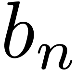 are.
Taking product of Eq. (1) with 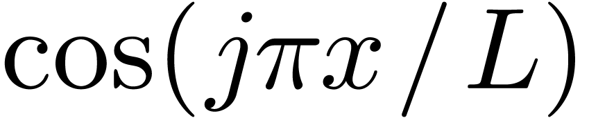 and
, respectively, and then integrating form
and 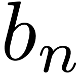 are.
Taking product of Eq. (1) with 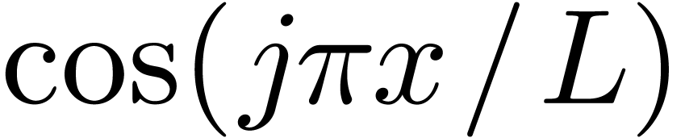 and
, respectively, and then integrating form  to 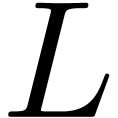, we obtain
to 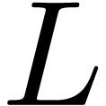, we obtain
| (2) |
and for 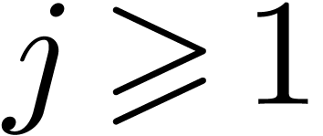,
 |
(3) |
 |
(4) |
In order to make the coefficients be uniformly
expressed by Eq. (3), we modify the Fourier series to the
following form
| 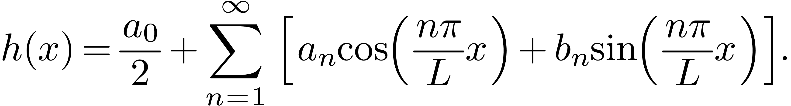 | (5) |
Then it is obvious that the coefficients 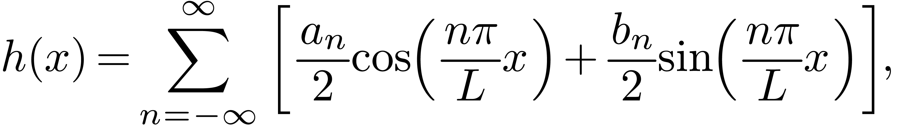 can be
evaluated by using Eq. (3). Note that
can be a complex-valued function (the independent variable  is still a real number). In this case, the coefficients
and are complex numbers.
is still a real number). In this case, the coefficients
and are complex numbers.

The Fourier series can also be expressed in terms of the complex-valued
basis functions . Next, we derive this form of
the Fourier series. Using Euler's formula
| 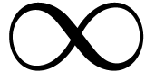 | (6) |
and
 |
(7) |
in Eq. (5), we obtain
| 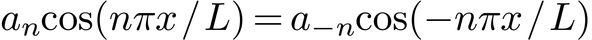 | (8) |
which can be further written
| 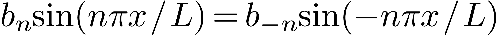 | (9) |
Define
| 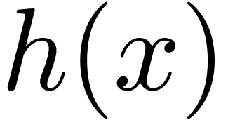 | (10) |
where 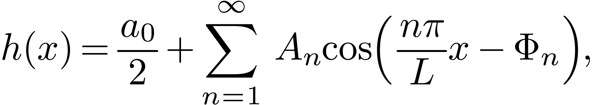, and note  , then
Eq. (9) is written
, then
Eq. (9) is written
 |
(11) |
Furthermore, using the expression of and , we find that and  in Eq. (10) can be uniformly expressed as
in Eq. (10) can be uniformly expressed as
| 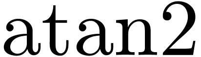 | (12) |
Equations (11) along with Eq. (12) gives a
compact form of the Fourier series[1]. On the other hand,
using Eq. (10), the coefficients
and can be recovered from
by
 |
(13) |
| 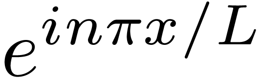 | (14) |
Note that if is real, then the coefficients and are real while the
coefficient are complex-valued. In this case,
Eqs. (13) and (14) imply that
and must be complex conjugates.
[In the above, we use the basis functions to
expand . If we choose the basis functions to be
 , then it is ready to verify that the Fourier
series are written
, then it is ready to verify that the Fourier
series are written
 |
(15) |
with given by
 |
(16) |
In this case, the coefficients and can be recovered from by
| 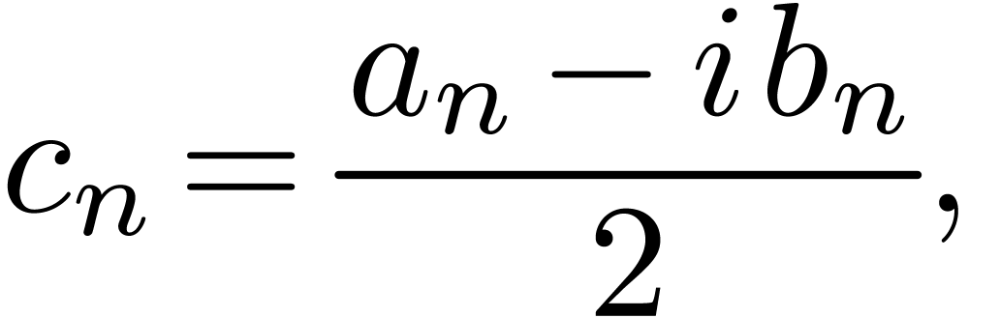 | (17) |
| 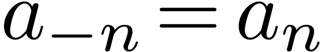 | (18) |
In using the Fourier series, we should be aware of which basis functions are used.]
The Fourier series discussed above is written
 |
(19) |
where is a function of period  ,
the coefficient is given by
,
the coefficient is given by
 |
(20) |
The 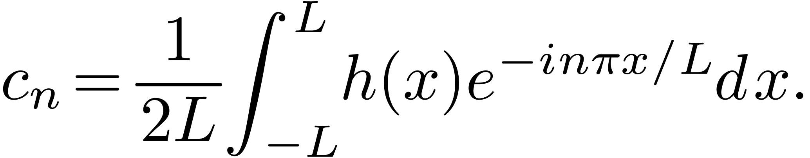th term of the Fourier series corresponds to a harmonic with frequency
| 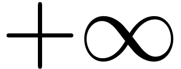 | (21) |
In terms of  , the coefficient in Eq. (20)
is written
, the coefficient in Eq. (20)
is written
 |
(22) |
In terms of , the Fourier series in Eq. (19)
is written

Note that  is the value of function at . Further note that the interval
between and
is the value of function at . Further note that the interval
between and  is 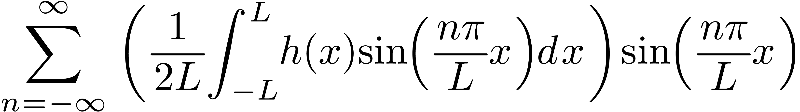. Thus the above summation is the rectangular formula for
numerically calculating the integration
is 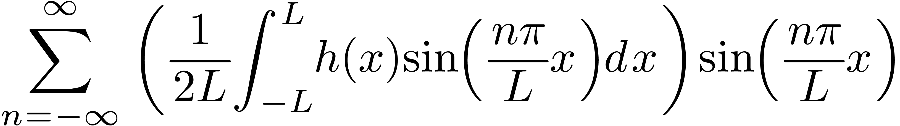. Thus the above summation is the rectangular formula for
numerically calculating the integration  .
Therefore, Eq. (23) can be approximately written
.
Therefore, Eq. (23) can be approximately written
| 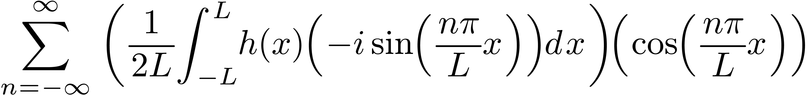 | (24) |
which will become exact when the interval 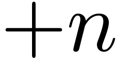, i.e.,
 . Therefore, for the case ,
the Fourier series exactly becomes
. Therefore, for the case ,
the Fourier series exactly becomes
| 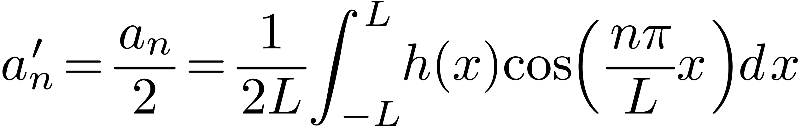 | (25) |
where  is given by Eq. (22), i.e.,
is given by Eq. (22), i.e.,
 |
(26) |
Note that the function given in Eqs. (25)
is proportional to  while the function given in Eq. (26) is proportional to . Since , it is desired to
eliminate the and
factors in Eqs. (25) and (26), which can be
easily achieved by defining a new function
while the function given in Eq. (26) is proportional to . Since , it is desired to
eliminate the and
factors in Eqs. (25) and (26), which can be
easily achieved by defining a new function
 |
(27) |
Then the Fourier series is written
 |
(28) |
 |
(29) |
Equations (28) and (29) are the Fourier
transformation pairs discussed in the next section. [Note that the signs
in the exponential of Eq. (28) and (29) are
opposite. Which one should be minus or positive is actually a matter of
convention because a trivial variable substitution  can change the sign between minus and positive. Proof. In terms of
can change the sign between minus and positive. Proof. In terms of  , Eq. (28) is written
, Eq. (28) is written
Define

Then Eq. (30) is written
| 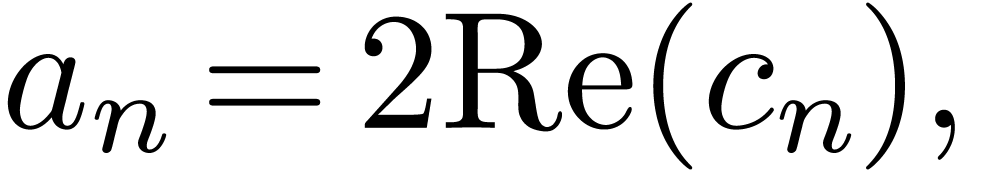 | (32) |
The signs in the exponential of Eqs. (31) and (32) are opposite to Eqs. (29) and (28), respectively.]
In the following, I use (31) as the forward Fourier transformation and Eq. (32) as the backward one (this is the convention used in the book “Numerical recipe”[2]). However, it seems that the form in Eqs. (28) and (29) are often used in practice, i.e., is expanded in terms of the basis function 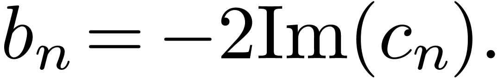 instead of 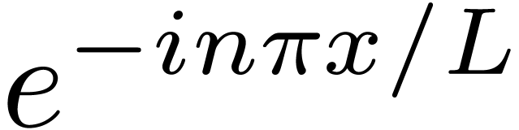. The extensively used free software FFTW uses Eqs. (29) as the forward transformation and Eq. (28) as the backward one. When using a Fourier transformation library, it is necessary to know which convention is used in order to correctly use the output of the library.
As discussed above, the Fourier transformation of a function is given by
 |
(33) |
Once the Fourier transformation is known, the original function can be reconstructed via
 |
(34) |
[Physicists usually prefer to use the angular frequency  instead of the frequency 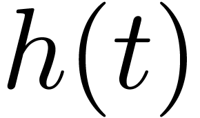 to represent the
Fourier transformation. Using
instead of the frequency 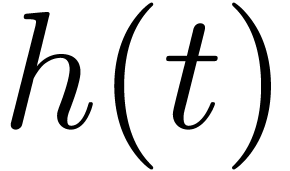 to represent the
Fourier transformation. Using  , equations. (33) and (34) are written, respectively, as
, equations. (33) and (34) are written, respectively, as
 |
(35) |
| 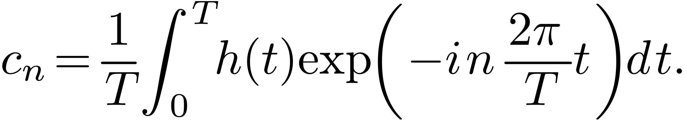 | (36) |
where we see that the asymmetry between the Fourier transformation and
its inverse is more severe in this representation: besides the
opposite-sign in the exponents, there is also a
factor difference between the Fourier transformation and its inverse.
Whether the factor appears at the forward
transformation or inverse one is actually a matter of convention. The
only requirement is that the product of the two factors in the forward
and inverse transformation is equal to . To
obtain a more symmetric pair, one can adopt a factor  at both the forward and inverse transformation. The representation in
Eqs. (33) and (34) is adopted in this article.
But we should know how to change to the
representation when needed.]
at both the forward and inverse transformation. The representation in
Eqs. (33) and (34) is adopted in this article.
But we should know how to change to the
representation when needed.]
Next, consider how to numerically compute the Fourier transformation of a function . A simple way is to use the rectangle formula to approximate the integration in Eq. (33), i.e.,
 |
(37) |
where and 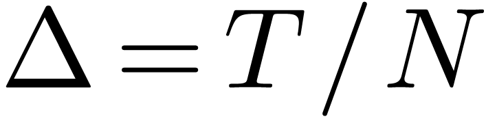 with  . Note Eq. (37) is an approximation, which
will become exact if 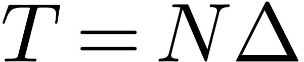. In practice, we can sample
only with a nonzero
. Note Eq. (37) is an approximation, which
will become exact if 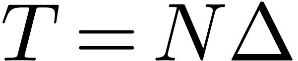. In practice, we can sample
only with a nonzero  .
Therefore Eq. (37) is usually an approximation. Do we have
some rules to choose a suitable so that Eq. (37) can become a good approximation or even an exact relation?
This important question is answered by the well-known sampling theorem,
which sates that a suitable
.
Therefore Eq. (37) is usually an approximation. Do we have
some rules to choose a suitable so that Eq. (37) can become a good approximation or even an exact relation?
This important question is answered by the well-known sampling theorem,
which sates that a suitable  to make Eq. (37) exact is given by
to make Eq. (37) exact is given by  , where 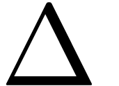 is the largest frequency contained in
(i.e.,
, where 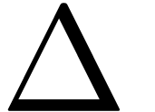 is the largest frequency contained in
(i.e.,  for 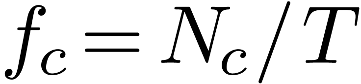).
for 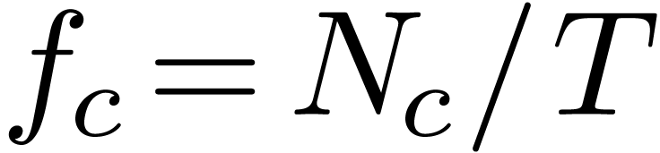).
In computational and experimental work, we know only a list of values
 sampled at discrete values of
sampled at discrete values of  .
Let us suppose that is sampled with uniform
interval between consecutive points:
.
Let us suppose that is sampled with uniform
interval between consecutive points:
| 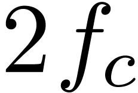 | (38) |
The sampling rate is defined by . The sampling theorem states that: If the Fourier transformation of function , , has the following property
| 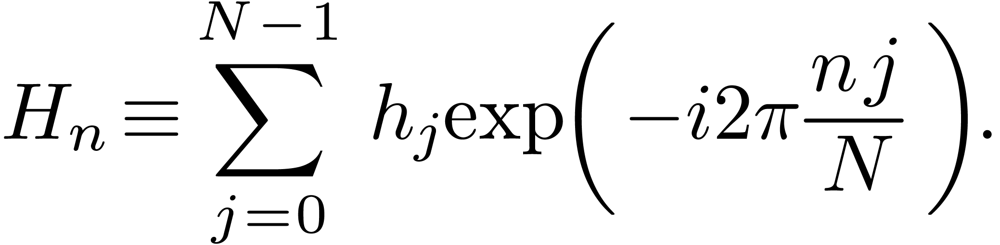 | (39) |
then sampling with the sampling rate 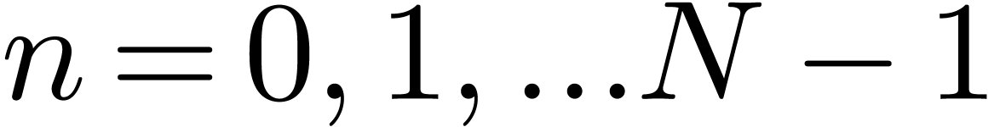 (i.e., ) will completely determine
, which is given explicitly by the formula
| 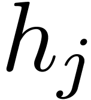 | (40) |
We will not concern us here with the proof of the sampling theorem and simply start working with Eq. (40) to derive the concrete expression for the Fourier transformation of . Substituting the expression (40) for into the Fourier transformation (33), we obtain the explicit form of the Fourier transformation of :

With the help of Wolfram Mathematica, the integration in Eq. (41) is evaluated analytically, giving
 |
(42) |
Using this, Eq. (41) is written
| 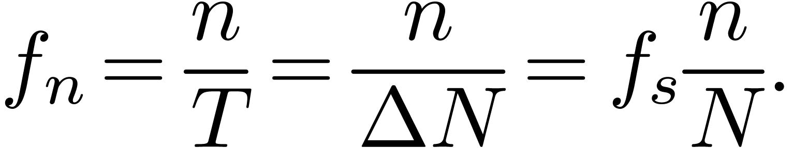 | (43) |
which shows that for ,
which is consistent with the assumption of sampling theorem, i.e., has the property given in Eq. (39). The
second line of Eq. (43) is identical to Eq. (37)
except that Eq. (43) in this case is exact while Eq. (37) is only approximate. In other words, if ,
then the Fourier transformation is exactly given by Eq. (43),
where is the largest frequency contained in (i.e., for ).
Suppose that a function is sampled with a
sampling frequency , and we know (by some other
means) that the largest frequency contained in
is less than  , then the sampling theorem
indicates that the Fourier transformation for
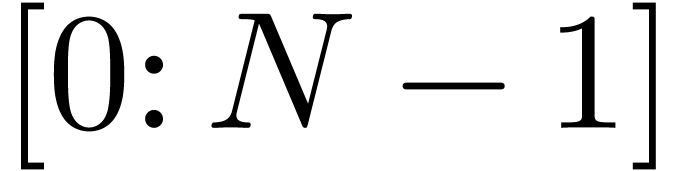 can be written as
, then the sampling theorem
indicates that the Fourier transformation for
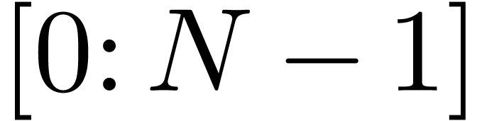 can be written as
 |
(44) |
Assume that the function is periodic with period
and is sampled in one period with 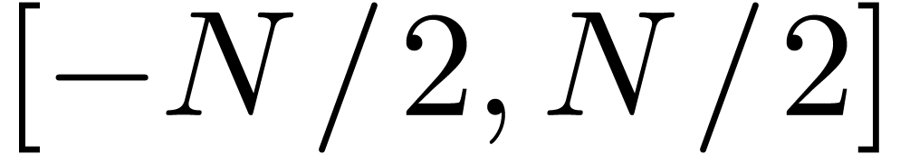 with , in which  ,
as shown in Fig. 1.
,
as shown in Fig. 1.
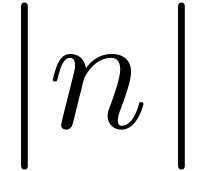 |
Figure 1. Sampling points in one
period of the signal, where 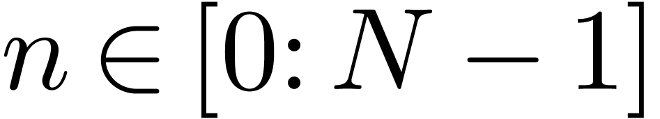 is the period
of the signal.
|
Then the infinite summation in Eq. (44) reduces to the following partial summation:
| 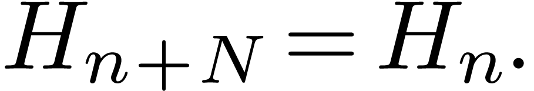 | (45) |
where 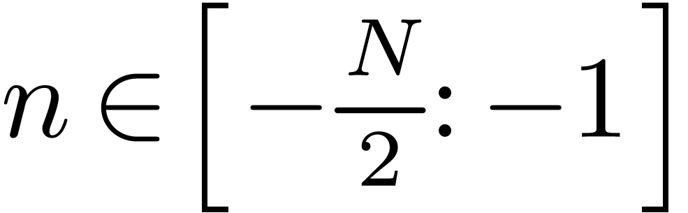 is the number of periods during the
infinite time. Note that, the partial summation in Eq. (45)
includes  values of 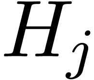 (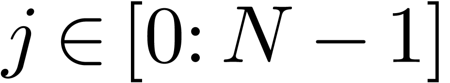 is excluded since it is identical to 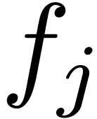).
With inputs, we can expect at most independent outputs. Further note that the frequency is
limited in the range
values of 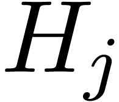 (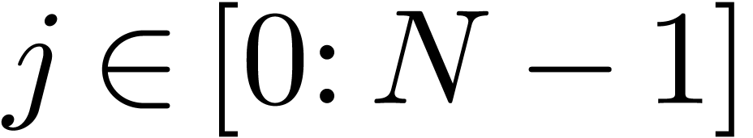 is excluded since it is identical to 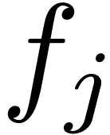).
With inputs, we can expect at most independent outputs. Further note that the frequency is
limited in the range  by the sampling theorem.
Therefore, a simple way to select the outputs
from Eq. (45) is to evaluate at
uniformly distributed frequencies given by
by the sampling theorem.
Therefore, a simple way to select the outputs
from Eq. (45) is to evaluate at
uniformly distributed frequencies given by
| (46) |
with  . (we consider only the case that is an even number; the above expression actually contains
. (we consider only the case that is an even number; the above expression actually contains
 outputs). Evaluate Eq. (45) at , then 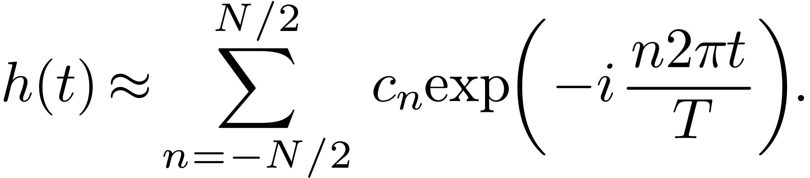 is written as
outputs). Evaluate Eq. (45) at , then 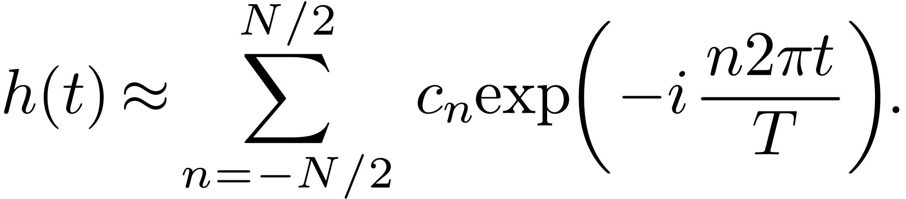 is written as
| 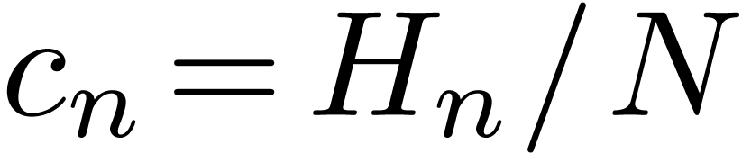 | (47) |
The partial summation in Eq. (47),
 |
(48) |
is called the Discrete Fourier transformation (DFT). Using Eqs. (47) and (48), we have
 |
(49) |
The DFT of time-domain array with  is given by Eq. (48), i.e.,
is given by Eq. (48), i.e.,
| 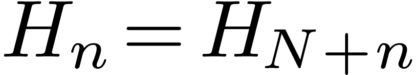 | (50) |
with 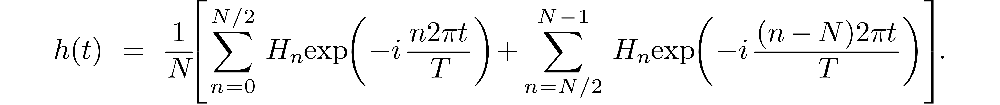, where . Note that
the subscript of is in the range while the subscript of is in the
range . Further note that
contains elements while
contains only elements. It is ready to find that
the array defined in Eq. (50) has the following periodic
property
 |
(51) |
Using this general property, we obtain  , i.e.,
the two ending elements of , namely and , are equal to each other. Thus
only one value is needed to be stored. This can be used to reduce the
number of elements of needing to be stored by
one. Then contains only
elements, instead of . Furthermore, we prefer to
make the index of and
array have the same range, i.e., we prefer to make the index of array also in the range
, i.e.,
the two ending elements of , namely and , are equal to each other. Thus
only one value is needed to be stored. This can be used to reduce the
number of elements of needing to be stored by
one. Then contains only
elements, instead of . Furthermore, we prefer to
make the index of and
array have the same range, i.e., we prefer to make the index of array also in the range  . This can be done by storing the negative frequency
part (i.e.,
. This can be done by storing the negative frequency
part (i.e.,  ) of in the
location where the subscripts are respectively
) of in the
location where the subscripts are respectively  ,
as is shown in Fig 2. A native method of implementing this
in a code is to first calculate the values of in
the range , then shift the array to achieve the
desired storage arrangement, as is shown in Fig 2. It turns
out that we have a better way to achieve the same goal: using again the
periodic property Eq. (51), we know that the value of the
array elements with negative subscripts, , happens to be equal to the value of the elements with subscripts ,
respectively. Using this, we can simply use Eq. (50) to
calculate values of in the range
,
as is shown in Fig 2. A native method of implementing this
in a code is to first calculate the values of in
the range , then shift the array to achieve the
desired storage arrangement, as is shown in Fig 2. It turns
out that we have a better way to achieve the same goal: using again the
periodic property Eq. (51), we know that the value of the
array elements with negative subscripts, , happens to be equal to the value of the elements with subscripts ,
respectively. Using this, we can simply use Eq. (50) to
calculate values of in the range  and the array obtained is exactly in the desired storage
arrangement.
and the array obtained is exactly in the desired storage
arrangement.
Of course, in practice, we do not use Eq. (50) directly to calculate . Instead, the famous Fast Fourier Transformation (FFT) algorithm is used to calculate with . Remember the storage arrangement discussed above is important for one to correctly interpret and use the output of FFT. For example, what frequency does the element with correspond to? The answer is obvious if we know the storage arrangement of FFT output: the corresponding frequency of No. th element is given by
| (52) |
Therefore the frequency of with
is  . Define
. Define  , which is the
fundamental frequency of the signal, then Eq. (52) can also
be written as
, which is the
fundamental frequency of the signal, then Eq. (52) can also
be written as
 |
(53) |
Q: What is the negative frequency counterpart of the element for  ? A: Examining the storage
arrangement shown in Fig. 2, we know it is the element .
? A: Examining the storage
arrangement shown in Fig. 2, we know it is the element .
Signals that are not band-limited usually contains all frequencies and
thus do not satisfy the condition that the sampling theorem requires
(i.e., for  ). In this
case, for any given data, we can still calculate
its DFT by using Eq. (48). However the results obtained are
meaningful only when approaches zero as the
frequency approaches
). In this
case, for any given data, we can still calculate
its DFT by using Eq. (48). However the results obtained are
meaningful only when approaches zero as the
frequency approaches  from above and approaches
from above and approaches
 from below, i.e., only when the results obtained
are consistent with the assumption used to obtain the results (the
assumption is that for ).
When the results obtained do not satisfy the above condition, then it
indicates that the “aliasing errors” have contributed to the
results. We can reduce the aliasing errors by increasing the sampling
frequency. The aliasing errors can be reduced but can not be completely
removed for a non-band-limited signal. More details on the aliasing
errors are needed here, to be continued.
from below, i.e., only when the results obtained
are consistent with the assumption used to obtain the results (the
assumption is that for ).
When the results obtained do not satisfy the above condition, then it
indicates that the “aliasing errors” have contributed to the
results. We can reduce the aliasing errors by increasing the sampling
frequency. The aliasing errors can be reduced but can not be completely
removed for a non-band-limited signal. More details on the aliasing
errors are needed here, to be continued.
In the above, we go through the process “Fourier seriesFourier transformation DFT”. This corresponds to going from the discrete case (Fourier series) to the continuous case (Fourier transformation), and then back to the discrete case (DFT). Since both Fourier series and DFT are discrete, it is instructive to examine the relation between the Fourier coefficient and the DFT .
The Fourier coefficient is given by Eq. (20), i.e.,
| (54) |
which can be equivalently written
| (55) |
where . If is sampled with sampling rate , then the number of sampling points per period is . Then the frequency used to evaluate the DFT [Eq. (46)] is written
| (56) |
which turns out to be identical to the frequency to which the Fourier
coefficient corresponds. Using  in Eq. (55), we obtain
in Eq. (55), we obtain

i.e., the relation between the Fourier coefficient
and the DFT is  . Note
that the approximation in Eq. (57) becomes an exact
relation if the largest frequency contained in
is less than .
. Note
that the approximation in Eq. (57) becomes an exact
relation if the largest frequency contained in
is less than .
The Fourier series of
| (59) |
can be approximated as

Using the periodic property of DFT, i.e., , the above expression is written as
Equation (61) provide the formula of constructing an approximate function using the DFT of the discrete samplings of the original function.
Evaluate given by Eq. (61) at the
discrete point  , yielding
, yielding

Equation (62) is actually the inverse DFT discussed in Sec. 4.8.
The DFT in Eq. (48),

with and  can also be
considered as a set of linear algebraic equations for
and can be solved in terms of , which gives
can also be
considered as a set of linear algebraic equations for
and can be solved in terms of , which gives
| (63) |
(The details on how to solve Eq. (48) to obtain the solution (63) is provided in Appendix 4.10.) Equation (63) recovers from (i.e., the DFT of ), and thus is called the inverse DFT.
The normalization factor multiplying the DFT and inverse DFT (here and ) and the signs of the exponents are merely conventions, and differ in some treatments. The only requirements of these conventions are that the DFT and inverse DFT have opposite-sign exponents and that the product of their normalization factors be .
I use the Fortran interface of the FFTW library. To have access to FFTW library, use the following codes:
use, intrinsic :: iso_c_binding implicit none include 'fftw3.f03'
To use the FFT subroutines in FFTW, we need to define some variables of the desired types, such as
type(C_PTR) :: plan complex(C_DOUBLE_COMPLEX) :: in(0:n-1), out(0:n-1)
Store input data in the “in” arrays, then, we can perform a DFT by the following codes:
plan = fftw_plan_dft_1d(n, in,out, FFTW_FORWARD,FFTW_ESTIMATE) call fftw_execute_dft(plan, in, out) call fftw_destroy_plan(plan)
Similarly, we can perform a inverse DFT by the following codes:
plan = fftw_plan_dft_1d(ngrids, in,out,FFTW_BACKWARD,FFTW_ESTIMATE) call fftw_execute_dft(plan, in, out) call fftw_destroy_plan(plan)
Note that the forward DFT in FFTW is defined by
 |
(64) |
and the inverse DFT is defined by
| (65) |
where there is no factor in the inverse DFT, and thus this factor should be included by hand if we want to recover the original data from the inverse DFT.
In order to solve the linear algebraic equations (48) for
, multiply both sides of each equation by  and then add all the equations together, which yields
and then add all the equations together, which yields
 |
(66) |
Interchanging the sequence of the two summation on the right-hand side, equation (66) is written
| (67) |
Using the fact that (verified by Wolfram Mathematica)
| (68) |
where  is the Kroneker Delta, equation (67)
is written
is the Kroneker Delta, equation (67)
is written
 |
(69) |
i.e.,
| (70) |
which can be solved to give
| (71) |
Equation (71) is the inverse DFT.
We mentioned (without giving proof) that the set of functions  and
and  with
is a “complete set” in expanding any function in the
interval , where
with
is a “complete set” in expanding any function in the
interval , where  is an
arbitrary point. Therefore Fourier series use both cosine and sine as
basis functions to expand a function. Let us introduce another
conclusion (again without giving proof) that the set of sine functions
with is a
“complete set” in expanding any function
in the interval . A similar conclusion is that
the set of cosine functions
is an
arbitrary point. Therefore Fourier series use both cosine and sine as
basis functions to expand a function. Let us introduce another
conclusion (again without giving proof) that the set of sine functions
with is a
“complete set” in expanding any function
in the interval . A similar conclusion is that
the set of cosine functions  with
with  is a “complete set” in expanding any function
in the interval . Note
that the argument of the basis functions used in the Fourier expansion
and the sine (or cosine) expansion differs by a factor of two, namely
is a “complete set” in expanding any function
in the interval . Note
that the argument of the basis functions used in the Fourier expansion
and the sine (or cosine) expansion differs by a factor of two, namely
 and
and  .
.
The first five basis functions used in Fourier expansion, sine expansion, and cosine expansion are plotted in Fig. 3.
Figure 3. The first five basis
functions used in Fourier expansion (upper), sine expansion
(middle), and cosine expansion (lower) in the interval with and |
The basis function  used in the Fourier expansion
have the properties . Therefore Fourier expansion
works best for function that satisfy . For
functions that do not satisfies this condition, there will be Gibbs
oscillations near the interval boundary when approximated by using the
Fourier expansion. A function with can be
considered as a periodic function with period
but having discontinuity points at the interval boundary. Gibbs
oscillation appear near discontinuity points, which can be inner points
in the interval or at the interval boundaries.
used in the Fourier expansion
have the properties . Therefore Fourier expansion
works best for function that satisfy . For
functions that do not satisfies this condition, there will be Gibbs
oscillations near the interval boundary when approximated by using the
Fourier expansion. A function with can be
considered as a periodic function with period
but having discontinuity points at the interval boundary. Gibbs
oscillation appear near discontinuity points, which can be inner points
in the interval or at the interval boundaries.
The basis functions used in sine expansion have
the properties  . Therefore since expansion works
best for functions that satisfy
. Therefore since expansion works
best for functions that satisfy  . For functions
that do not satisfies this condition, there will be Gibbs oscillations
near the interval boundary when approximated by using the sine
expansion. Examples are shown in Fig. 4.
. For functions
that do not satisfies this condition, there will be Gibbs oscillations
near the interval boundary when approximated by using the sine
expansion. Examples are shown in Fig. 4.
The basis functions used in cosine expansion
have the properties . Therefore cosine expansion
works best for functions that satisfy  . For
functions that do not satisfies this condition, there will be Gibbs
oscillations near the interval boundary when approximated by using the
cosine expansion (to be verified numerically by me).
. For
functions that do not satisfies this condition, there will be Gibbs
oscillations near the interval boundary when approximated by using the
cosine expansion (to be verified numerically by me).
  |
Figure 4. Left: constant function
approximated by using the sine expansion.
Right: linear function |
Next, let us discuss the sine and cosine transformation.
There are many slightly different types of Discrete Sine Transforms (DST). One form I saw in W. Press's numerical recipe book is given by
| (72) |
(which can be obtained formally by replacing DFT's exponential function
by sine and the  by .) The
inverse sine transformation is given by (I did not derive this, but has
numerically verified that this transform recover the original data if
applied after the sine transform (72))
by .) The
inverse sine transformation is given by (I did not derive this, but has
numerically verified that this transform recover the original data if
applied after the sine transform (72))
 |
(73) |
which is identical with the original transformation except for the
normalization factor  .
.
Of course we need a fast method of computing the above DST. All fast methods for this finally need to make use of the fast method used in the computation of DFT. To conveniently use the fast method of DFT, we need carefully define the DST so that the DST can make easy connection to the DFT so that the DFT fast method can be easily applied to compute the DST. A standard way of making this easy is to define the DST via the DFT of a odd extension of the original data. Next, let us discuss this.
Let us introduce the Discrete Sine Transform (DST) by odd extending a
given real number sequence and then using the DFT of the extended data
to define the DST. There are several slightly different way of odd
extending a given sequence and thus different types of DST. Given a real number sequence , one
frequently adopted odd extension is  . This odd
extension is illustrated in Fig. 5.
. This odd
extension is illustrated in Fig. 5.
After the extension, the total number of points is
with  . Then DFT use the
points with index as input. The output of this
DFT is an odd symmetric sequence of purely imaginary numbers. Next, let
us examine the output and try to simplify it. The DFT in this case is
given by
. Then DFT use the
points with index as input. The output of this
DFT is an odd symmetric sequence of purely imaginary numbers. Next, let
us examine the output and try to simplify it. The DFT in this case is
given by
| (74) |
where  is the odd extension of the original data
. For
is the odd extension of the original data
. For  , the relation
between and is given by
, the relation
between and is given by
 |
(75) |
For , the relation between
and is given by
 |
(76) |
Note that and , then expression (74) is written as
| (77) |
Using , the above expression is written as
 |
(78) |
Using the relations (75) and (76) to replace
by , the above expression
is written
 |
(79) |
Change the definition of the dump index in the
above summation to make it in the conventional range  ,
the above expression is written as
,
the above expression is written as
Defining  to replace the dump index in the second
summation, the above expression is written as
to replace the dump index in the second
summation, the above expression is written as
which is a purely imaginary number. Expression (80) has the symmetry
 |
(81) |
which is called odd symmetry. Therefore only half of the data for  with
with  need to be stored,
namely with . Equations
(81) indicates that and are definitely zero and thus do not need to be stored.
Then the remaining data to be stored are with
need to be stored,
namely with . Equations
(81) indicates that and are definitely zero and thus do not need to be stored.
Then the remaining data to be stored are with
 , i.e., with
, i.e., with  . Following the convention of making the index of in the range , we define
. Following the convention of making the index of in the range , we define  . Then
. Then
 |
(82) |
with , which is the index that we prefer. Finally, the so-called type-I Discrete Sine Transform (DST-I) is defined based on Eq. (82) via
 |
(83) |
with  .
.
From the above derivation, we know that the DST,  ,
is related to the DFT, , by
,
is related to the DFT, , by  ,
and thus the meaning of is in principle clear.
,
and thus the meaning of is in principle clear.
Next, let us examine the meaning of the DST in more details so that we can easily use it in practice. Let us try to use the DST to reconstruct a function that approximates the original data. Since DST is only a special case of DFT, reconstruct the function using DST follows the same procedure used in DFT. In DFT, the function that approximates the original data is reconstructed via Eq. (61) (changing to the positive exponent convention), i.e.,
| (84) |
where is the length of the interval in which the
samplings with are made.
For our present case, i.e., an odd extension of the original data, we have and  and . Then Eq. (84) is written as
and . Then Eq. (84) is written as
| (85) |
Using the odd symmetry of , i.e., , the above expansion is written as
| (86) |
Define , and note that ,
then the above expression is written as
 |
(87) |
i.e.,
 |
(88) |
which is simplified as
| (89) |
As a convention, we prefer that the summation index begins from 0 and
ends at  . Then expression (89) is
re-written as
. Then expression (89) is
re-written as

Using the relation between DST and DFT, i.e.,  ,
the above equation is written as
,
the above equation is written as
 |
(90) |
This is the formula for constructing a function approximating the
original function using the DST data. This formula is a expansion over
the basis functions with the DST acting as the expansion coefficients. Therefore the direct
meaning of the DST, , is that they are the
expansion coefficients when using the sine functions
as the basis functions to approximate a function in the interval of
length . From Fig. 5, we know that
the interval length is given by ,
where is the uniform interval of the original
sampling points.
to be written
Compared with Eq. (1) that uses the trigonometric
functions, Fourier series (11) and (12), which
is expressed in terms of the complex exponential function , is more compact. The convenience introduced by the
complex exponential function can be more easily appreciated when we deal
with multiple-dimensional Fourier series. For example, a two-dimensional
function  can be expanded as Fourier series about
,
can be expanded as Fourier series about
,
| (91) |
where  is the period of
in direction. The expansion coefficients can be further expanded as Fourier series about
is the period of
in direction. The expansion coefficients can be further expanded as Fourier series about  ,
,
| (92) |
where is the period of
in direction. Using Eq. (92) in Eq.
(91), we obtain
 |
(93) |
where the coefficients  can be written
can be written
Equations (93) and (94) give the
two-dimensional Fourier series of . We see that
the extension of Fourier series from one-dimension case to two-dimension
case is straightforward when expressed in terms of the complex
exponential function . However, if we use ,  ,
,  ,
and as basis functions, the two-dimensional
Fourier series of is a little complicated (refer
to Sec. 6.2). The final result is given by
,
and as basis functions, the two-dimensional
Fourier series of is a little complicated (refer
to Sec. 6.2). The final result is given by
| (95) |
where the coefficient  is given by
is given by
| (96) |
and other coefficients are given by
 |
(97) |
| (98) |
This section is to demonstrate that multiple-dimensional Fourier series
will become complicated if we use the cosine and sine as basis
functions. A two-dimensional function can be
first expanded as Fourier series about ,
| (99) |
and then the two coefficients and  can be further expanded as Fourier series about ,
can be further expanded as Fourier series about ,
| (100) |
 |
(101) |
Substituting Eq. (100) and (101) into Eq. (99), we obtain

Next, we consider the special case that  and use
and
and use
and  to denote and , respectively. Then Eq. (102) is written
to denote and , respectively. Then Eq. (102) is written
Using the product-to-sum trigonometric identities, equation (103) is written
Equation (104) is obviously more complicated than Eq. (93) that uses complex exponential functions. (It is ready to realize that the Fourier series will become even complicated for the three-dimensional case.) The coefficients appearing in Eq. () are written
| (105) |
 |
(106) |
 |
(107) |
 |
(108) |
 |
(109) |
| (110) |
The following is about a specific FFT subroutine provided by the Numerical recipes book[2]. This is not a general case.
The input and output of the DFT are usually complex numbers. In the
implementation of FFT algorithm provided by Numerical recipes book[2], to avoid using complex numbers, the algorithm adopts the
real number representation of the complex numbers. In this scheme, two
elements of a real number array are used to store one complex number. To
store a complex array “cdata” of length ,
we will need a real number array “rdata” of length . The first elements of array “rdata” will
contain the real part of “cdata(1)”, the second elements of
“rdata” will contain the imaginary part of
“cdata(1)”, and so on.
To test the correctness of the above statement, I generated a real
number array with length by using a random
generating routine and calculate the DFT of the array with two methods.
The real array generated by the random generator are considered to be a
real number representation of a complex array with length  . Using the real array as the input of the FFT routine (the
code in ~/project_new/fft). To check the correctness of my understanding
of the input and output of the FFT, I manually convert the real number
of length to a complex array with length , and use directly the summation in Eq. (50)
to calculate the DFT. The output I got is obviously a complex array with
length . Then I manually convert the complex
array to a real number array of length and plot
the output in Fig. 6 with dashed line. The results in Fig.
6 indicates the results given by the FFT and the naive
method used by me agree with each other well. This proves that my
understanding of the input and output of FFT (especially the storage
arrangement) is correct.
. Using the real array as the input of the FFT routine (the
code in ~/project_new/fft). To check the correctness of my understanding
of the input and output of the FFT, I manually convert the real number
of length to a complex array with length , and use directly the summation in Eq. (50)
to calculate the DFT. The output I got is obviously a complex array with
length . Then I manually convert the complex
array to a real number array of length and plot
the output in Fig. 6 with dashed line. The results in Fig.
6 indicates the results given by the FFT and the naive
method used by me agree with each other well. This proves that my
understanding of the input and output of FFT (especially the storage
arrangement) is correct.
Figure 6. The output of a FFT routine
(solid line) agrees well with those (dashed line) calculated by
directly evaluate the summation in Eq. (50) (the
latter is coded by me). The agreement indicates my understanding
of the output of FFT (especially the storage arrangement) is
correct. Here the time domain data is generated by a random
generating routine.
|
To clearly show the output of FFT, we recover the real and imaginary part of DFT from the output of FFT and plots the data as a function of their corresponding frequency. The results are given in Fig. 7.
 |
Figure 7. The real (left) and
imaginary (right) part of the discrete Fourier transformation as a
function of the frequency. The point |
Consider the calculation of the following integral:
 |
(111) |
Divide the interval  into
uniform sub-intervals and define
into
uniform sub-intervals and define
| (112) |
Then the integration in Eq. (111) can be approximated as
 |
(113) |
Define with integer  and
and
 . Consider the calculation of .
Using Eq. (113), we obtain
. Consider the calculation of .
Using Eq. (113), we obtain
Equation (115) indicates the value of the integration can be obtained by calculating the discrete Fourier
transformation of . However, as discussed in Ref.
[2], equation (115) is not recommended for
practical use because the oscillatory nature of the integral will make
Eq. (115) become systematically inaccurate as increases. Next, consider a new method, in which is expanded as
 |
(116) |
Apply the integral operator to both sides of Eq. (116), we obtain
| (117) |
Make the change of variables in the first
integral and  in the second integral, the above
equation is written as
in the second integral, the above
equation is written as
| (118) |
Define  and make use of ,
the above equation is written as
and make use of ,
the above equation is written as
 |
(119) |
Define
| (120) |
 |
(121) |
Then Eq. (119) is written as
 |
(122) |
|
Figure 8. Older version of Fig. 2,
created by Metapost, the new version is created by the vector
graphic editor in TeXmacs.
|
 .
.
 approximated by
using the sine expansion. Gibbs oscillation appears near the
boundaries, where
approximated by
using the sine expansion. Gibbs oscillation appears near the
boundaries, where  does not satisfy the
condition ( and
does not satisfy the
condition ( and
 . The reconstruction formula is given by .
. The reconstruction formula is given by .

 . The
point used in the DFT is
. The
point used in the DFT is  .
.
 corresponds to frequency
corresponds to frequency  while the point
corresponds to frequency ,
where
while the point
corresponds to frequency ,
where  with is the
sample interval in time domain. The time domain data is the same
as used in Fig.
with is the
sample interval in time domain. The time domain data is the same
as used in Fig.